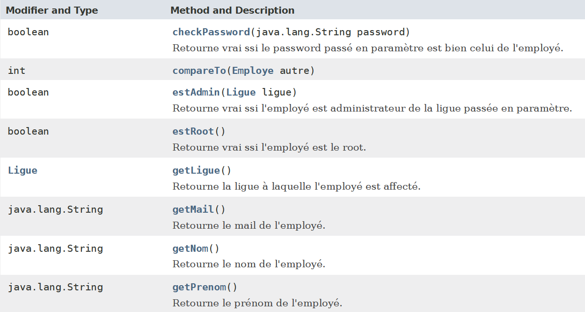

Presentation du projet
Un des responsables de la M2L, utilise une application pour gérer les employés des ligues. Cette application, très simple, n’existe qu’en ligne de commande et est mono-utilisateur. Nous souhaiterions désigner un administrateur par ligue et lui confier la tâche de recenser les employés de sa ligue.
Spécification du besoin
- Un simple employé de ligue peut ouvrir l’application et s’en servir comme un annuaire, mais il ne dispose d’aucun droit d’écriture.
- Un employé par ligue est admininstrateur et dispose de droits d’écriture peut gérer la liste des emloyés de sa propre ligue avec une application bureau.
- Le super-admininstrateur a accès en écriture à tous les employés des ligues. Il peut aussi gérer les comptes des administrateurs des ligues avec une application accessible en ligne de commande.
- L’application doit être rendue multi-utilisateurs grace à l’utilisation d’une base de données.
Modélisation d'une base de données avec un MCD
Ci-dessous la documentation pour ce baser lors de la création de MCD
I. Class employe
II. Class Ligue

Dictionnaire des données et MCD réaliser lors de projet

Entité Employe nous permets d'enregistrer dans une base de données le nom, le prénom, le mail, mot de passe, date d'arrivée et date de départ de l'employe. Ainsi dans le but de pouvoir attribuer des administrateurs et des superadministrateurs on ajoute dans entité les booleans employé estAdmin et estSuperAdmin qui vont nous permettre de savoir si l'employe et admin d'une ligue.
Vérification du fonctionnement de l'application grâce à des tests unitaires
Notre but est de vérifier le bon fonctionnement de l'application. Pour cela on fait des tests unitaires pour les classes Employe, Ligues et la géstion des dates.
La première methode nous retourne le nom de l'employe. Pour ce faire on ajoute une ligue "nomLigue". La méthode setNom nous permet de changer le nom de l'employe.
Gestion de la date de départ et celle d'arrivée de chaque employe
Afin de permettre à chaque employe de saisir et d'enregistrer sa date d'arrivée et eventuellement la date de départ nous allons ajouter dans le contructeur de la class Employe deux variables de type LocaleDate

Il est aussi nécessaire d'ajouter les methodes get et set afin de permettre à l'utilisateur de saisir la date de départ et celle d'arrivée